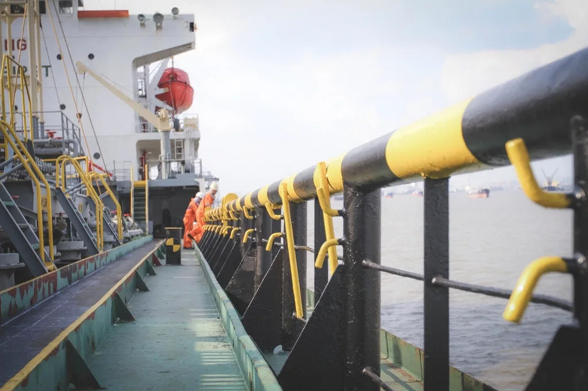
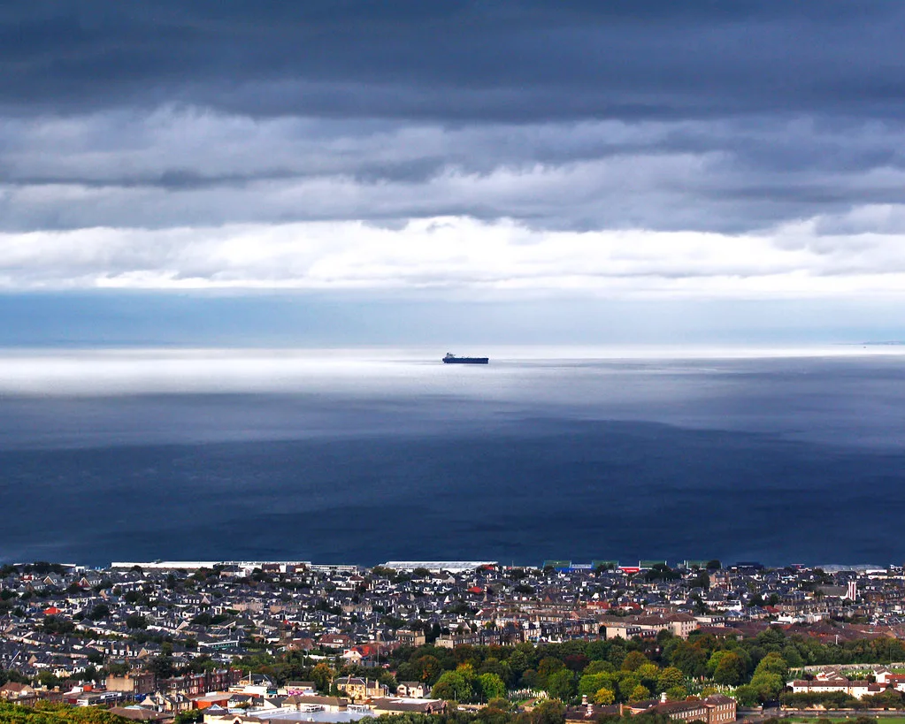

인천 자월도 해상 석유제품 운반선 화재…선원 2명 사망·16명 구조
인천 옹진군 자월도 인근 해상에서 27일 밤 석유제품을 실은 운반선에 불이 나 선원 2명이 숨지고 16명이 구조됐다. 해경은 경비함정과 항공기를 대거 투입해 밤샘 진화 작업을 벌인 끝에 28일 새벽 불길을 완전히 잡았다. 위험물을 싣고 운항하던 선박에서 발생한 사고인 만큼 대형 해양오염이나 폭발로 이어질 수 있다는 우려가 컸지만, 추가 인명 피해와 기름 유출은 확인되지 않았다.
해경에 따르면 불은 27일 오후 10시 38분께 자월도 북쪽 약 7.4㎞ 해상을 지나던 7000t급 석유제품 운반선에서 시작됐다. 이 배에는 한국인 11명과 외국인 7명 등 모두 18명이 타고 있었다. 신고를 받은 해경은 인근을 항해하던 선박과 경비함정을 현장으로 보내 승선원 구조에 나섰고, 불이 난 선체에서 벗어난 선원들을 차례로 구조정에 옮겨 태웠다.

안타깝게도 60대와 20대 한국인 남성 선원 2명은 기관실에서 심정지 상태로 발견됐다. 이들은 구조 직후 인근 영흥도로 옮겨져 응급처치를 받았으나 끝내 숨졌다. 나머지 선원 16명은 큰 부상 없이 뭍으로 이송돼 건강에 이상이 없는 것으로 파악됐다. 기관실은 연료와 기계 설비가 밀집해 있어 화재에 취약하고, 연기와 열이 순식간에 차올라 탈출이 어려운 공간으로 꼽힌다.
진화에는 해경 경비함정 24척과 항공기 1대, 관계기관 선박 3척이 동원됐다. 야간에 먼바다에서 벌어진 선박 화재는 접근과 방수(放水)가 까다롭고, 선체 내부까지 열이 스며들면 재발화가 반복되는 경우가 많다. 해경은 선체 외부에서 냉각수를 뿌리며 불길을 억제했고, 화재 발생 5시간 22분 만인 28일 오전 4시께 큰불을 완전히 껐다고 밝혔다.

석유제품 운반선은 인화성이 강한 화물을 대량으로 싣고 다니기 때문에 작은 불씨도 대형 사고로 번질 위험이 있다. 국내 연안에서는 급유선과 유조선의 기관실 화재, 유증기 폭발 사고가 드물지 않게 발생해 왔고, 그때마다 위험물 운반 선박의 소방설비 점검과 승선원 대피 훈련을 강화해야 한다는 지적이 반복됐다. 특히 기관실은 연료유와 윤활유, 고온의 배기 설비가 좁은 공간에 몰려 있어 한 곳에서 시작된 불이 순식간에 번지기 쉽고, 짙은 연기 탓에 초기 진화와 대피가 동시에 어려워지는 특성이 있다. 이번 사고 선박에서 기름이 새어 나온 정황은 아직 확인되지 않았지만, 해경은 만일에 대비해 방제정과 오일펜스를 준비하는 등 해상 오염 방제 태세도 함께 유지하고 있다.
사고가 난 자월도 일대는 인천항과 경기 남부 항만을 오가는 화물선과 유조선의 통항이 잦은 해역이다. 섬과 암초가 흩어져 있어 평소에도 항해에 주의가 요구되는 구간인 데다, 사고가 야간에 발생하면 구조 세력이 현장에 닿기까지 시간이 더 걸린다. 이번에는 인근을 지나던 선박들이 초기 구조에 힘을 보태면서 다수 선원이 비교적 이른 시간에 배에서 벗어날 수 있었던 것으로 전해졌다.
해경은 불이 완전히 꺼진 뒤 선체를 안전한 해역으로 옮겨 정밀 감식을 벌일 계획이다. 발화 지점으로 지목된 기관실을 중심으로 전기 설비 결함, 기계 과열, 유증기 발생 여부 등 여러 가능성을 열어두고 원인을 조사하기로 했다. 또 사고 당시 선원들의 대피 경위와 소화 설비 작동 상황, 비상 훈련 이행 여부를 확인해 인명 피해를 줄일 수 있었는지도 함께 살필 방침이다. 조사 결과에 따라 같은 선사나 유사 선령의 위험물 운반선에 대한 특별 안전 점검이 뒤따를 가능성이 크다.